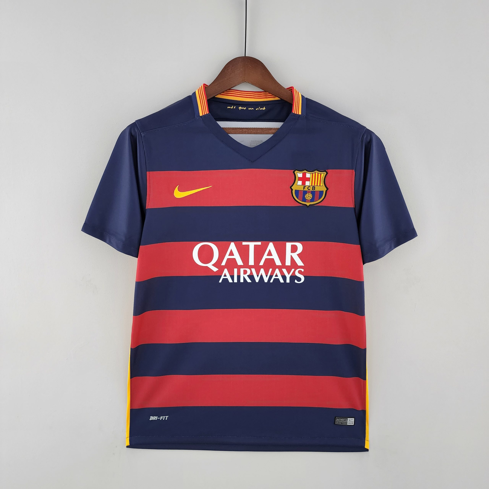

Una de las camisetas más icónicas de la historia del club. El escudo aparece bordado en el pecho, y en el centro luce el parche dorado de campeón del Mundial de Clubes de la FIFA. Fabricada con poliéster reciclado. La camiseta que vistieron Messi, Suárez y Neymar el tridente MSN en una temporada para la historia.
Precio: 44,99€
Comprar